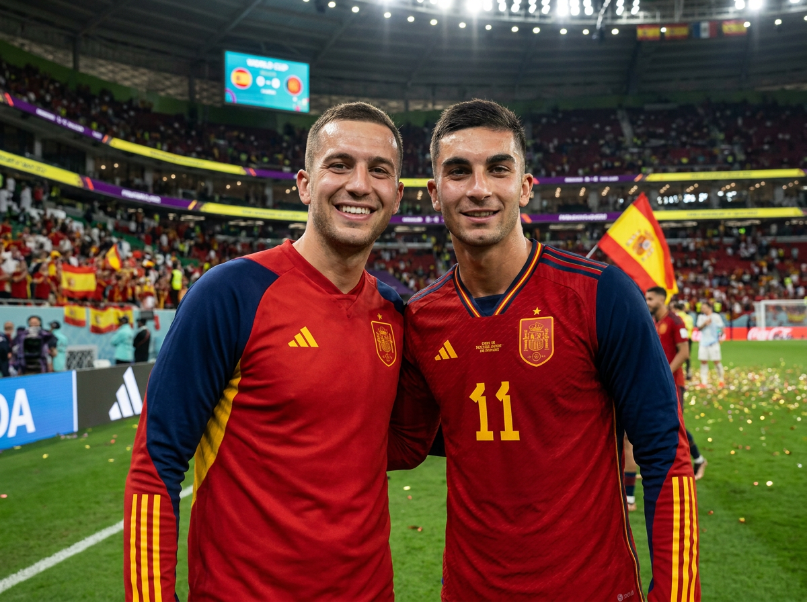
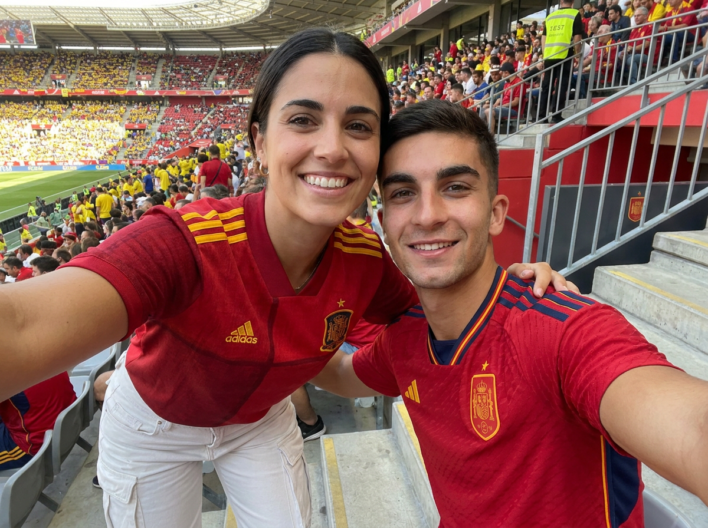
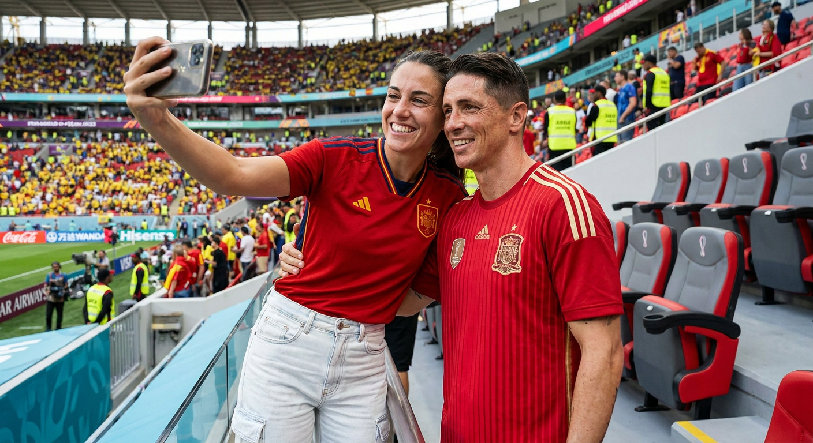

ИИ-фото с Ферраном Торресом: 3 промпта для нейросети

Обычный снимок с любимым футболистом почти всегда упирается в расстояние, билеты и удачный момент после матча. Генерация решает эту проблему: можно собрать правдоподобное фото рядом с Ферраном Торресом, не меняя черты лица и возраст пользователя.
В подборке — три сценария в разной подаче: памятный кадр во время чемпионата мира, фотография сразу после игры и спортивное селфи на поле. Промпты рассчитаны на фотореалистичный результат с формой сборной Испании, стадионным светом и живой атмосферой матча.
Как сгенерировать такое фото: пошагово
Нужен снимок анфас при ровном свете, лицо в кадре целиком, без тёмных очков и головных уборов. Разрешение от 1000 пикселей по короткой стороне. Чем чётче исходник, тем точнее модель повторит черты.
Выберите сценарий ниже и нажмите «Копировать» — текст уйдёт в буфер целиком, вместе с командой сохранения внешности. Эта команда стоит первой строкой и отвечает за то, чтобы на выходе было ваше лицо, а не случайное.
Кнопка «Сгенерировать» рядом с каждым промптом открывает модель в новой вкладке. Nano Banana Pro работает с референсом лица — в отличие от моделей, которые генерируют портрет с нуля и узнаваемость теряют.
Промпт — в поле ввода, портрет — через загрузку референса. Порядок значения не имеет, но без референса команда сохранения внешности работать не будет: модели нечего сохранять.
Для сторис и ленты берите 9:16, для превью и обложек — 4:3. Первый результат редко идеален: если поза или свет ушли не туда, поправьте соответствующую часть промпта и запустите заново. Обычно хватает двух-трёх итераций.
3 промптов для генерации
1. Памятное фото на стадионе
Строго сохранить внешность по загруженному референсу: черты лица, пропорции, мимику и текстуру кожи без изменений. Сделай фотореалистичный памятный снимок пользователя рядом с футболистом сборной Испании Ферраном Торресом на поле большого стадиона во время Чемпионата мира по футболу. Они стоят плечом к плечу и открыто улыбаются в объектив. На пользователе официальная красная футболка Испании с жёлтыми лампасами; одежда выглядит естественно, без пластикового блеска. Лицо пользователя должно оставаться узнаваемым: те же форма лица, глаза, нос, губы, оттенок кожи, причёска, возраст и индивидуальные особенности, без идеализации. Торрес выглядит реалистично и узнаваемо, одет в игровую форму Испании, с естественными пропорциями. Позади — заполненные трибуны, испанские флаги, яркое электронное табло и мощные прожекторы. Добавь ощущение большого международного матча: конфетти в воздухе, слегка размытых болельщиков и мягкую глубину резкости. Кадр должен выглядеть как настоящее репортажное фото, снятое с рук, с натуральной кожей и умеренной детализацией.
2. Кадр после финального свистка

Строго сохранить внешность по загруженному референсу: черты лица, пропорции, мимику и текстуру кожи без изменений. Создай максимально правдоподобную фотографию пользователя и Феррана Торреса сразу после матча Чемпионата мира по футболу. Оба стоят на поле лицом к камере, плечом к плечу, слегка повернувшись друг к другу, будто их быстро попросили сделать совместный снимок. Пользователь улыбается и носит официальную красную футболку сборной Испании с тёмно-синими рукавами и жёлтыми боковыми лампасами; ткань естественно ложится и собирается в небольшие складки. Торрес одет в такую же игровую форму с номером и эмблемой федерации, выглядит спортивно и немного вспотевшим после игры. Сохрани внешность пользователя без искажений: реальные черты, пропорции лица, возраст, причёску и естественную мимику. На заднем плане видны поле, стадионные трибуны, яркий свет прожекторов и остатки матчевой атмосферы. Используй мягкое размытие фона, реалистичную текстуру ткани, натуральную кожу и свет вечернего стадиона. Итог должен напоминать случайный снимок профессионального фотографа, а не постановочный постер.
3. Селфи на футбольном поле

Строго сохранить внешность по загруженному референсу: черты лица, пропорции, мимику и текстуру кожи без изменений. Сгенерируй спортивное селфи в фотореалистичной манере: пользователь в форме сборной Испании стоит рядом с футболистом Ферраном Торресом на поле стадиона во время Чемпионата мира по футболу. Используй лёгкую перспективу камеры на уровне груди и лица, как при съёмке смартфоном с объективом 35–50 мм. Пользователь выглядит именно как на загруженном референсе: сохрани форму глаз, бровей, носа, губ, овал лица, пропорции и живую мимику, не меняй внешность. Оба широко улыбаются; пользователь одной рукой обнимает Торреса за талию, поза остаётся непринуждённой и дружеской. На пользователе красная футбольная форма Испании, на игроке — реалистичная игровая экипировка сборной. Добавь мягкий телефонный look без сильной ретуши, естественный свет и высокую детализацию кожи. В кадре должны читаться текстуры футболок, джинсов или карго-одежды, пластиковых сидений и газона. Фон слегка размыт, но узнаваем: трибуны, стадион и атмосфера матча.
Что важно учесть в этом стиле
Фотореализм держится не только на лице, но и на мелких признаках настоящего снимка: складках ткани, влажной коже после игры, бликах прожекторов, лёгком шуме камеры и неодинаковой резкости переднего и заднего плана. Для общего кадра подойдёт диафрагма f/2.8–f/4, а для селфи — имитация смартфона с эквивалентом 35–50 мм.
Не перегружайте сцену десятками объектов. Достаточно указать поле, трибуны, флаги, табло и свет стадиона, а затем отдельно описать позы. Если модель начинает менять лицо референса, сократите число дополнительных эпитетов и повторите конкретные признаки внешности один раз.
Идеи для вариаций
- Фото в подтрибунном коридоре с майкой в руках и мягким смешанным светом.
- Кадр у рекламного щита после победного матча с конфетти и флагом Испании.
- Снимок с трибун: пользователь и Торрес сидят рядом, а поле остаётся в расфокусе.
- Динамичный момент у боковой линии с мячом, прожекторами и лёгким эффектом движения.
- Чёрно-белый газетный кадр с высокой детализацией формы и естественной зернистостью.
Как собрать свой промпт
Сначала задайте тип снимка и место: селфи, репортажный кадр или фото после игры на поле. Затем опишите взаимное положение людей, одежду, эмоции и действие — например, рука на плече или совместный взгляд в камеру. После этого добавьте фон, источник света и параметры съёмки: объектив 50 мм, f/2.8, малая глубина резкости или мягкий смартфонный эффект.
Референс внешности лучше загружать отдельным изображением хорошего качества, без очков, сильных теней и фильтров. Если с первой попытки лицо или форма получились неточно, меняйте по одному параметру. Обычно полезно заложить 4–8 генераций: отдельно проверить лицо, позу, эмблему и общий свет.
Ошибки, из-за которых кадр не получается
- Слишком много требований в одной фразе. Модель смешивает позы, одежду и фон, поэтому разбивайте описание на блоки.
- Нет указания на ракурс. Без слов «селфи», «на уровне глаз» или «объектив 50 мм» лица и тела могут выглядеть непропорционально.
- Размытая одежда. Названия цветов недостаточно: уточняйте материал, рукава, лампасы, номер и эмблему.
- Чрезмерная ретушь. Формулировки вроде «идеальная кожа» часто превращают живой снимок в глянцевый портрет.
- Слабый референс. Профиль, низкое разрешение и закрытое лицо мешают сохранить индивидуальные черты.
Частые вопросы
Как сделать такое ИИ-фото бесплатно?
Можно попробовать Kandinsky и Шедеврум: они подходят для базовой генерации, но точное совмещение лица с известным человеком и стабильное сохранение референса получается не всегда. В Krea AI и Arena.ai обычно больше инструментов для работы с изображением, однако доступность функций меняется, а результат с загруженным лицом может потребовать нескольких попыток. Перед публикацией проверьте правила сервиса для изображений реальных людей.
Как сохранить узнаваемость лица на нескольких генерациях?
Используйте один чёткий портрет анфас, не меняйте его между попытками и описывайте конкретные признаки: форму глаз, носа, губ, овал лица, причёску и возраст. Не добавляйте слова «идеальная внешность» и «модельное лицо» — они часто меняют исходный образ.
Почему Ферран Торрес получается непохожим на себя?
Модель может ошибаться с лицами публичных людей, особенно при сложном ракурсе или перекрытии лиц. Упростите сцену, поставьте обоих людей лицом к камере, добавьте дневной или стадионный свет и отдельно укажите естественные пропорции, причёску и форму сборной.
Как убрать странные руки, эмблемы и номера на форме?
Сделайте композицию проще и не просите одновременно несколько жестов. Для рук укажите конкретную позу: «одна рука на плече», «вторая опущена». Номер и эмблему лучше проверять после генерации крупным планом, поскольку текст и мелкие символы нейросети часто искажают.